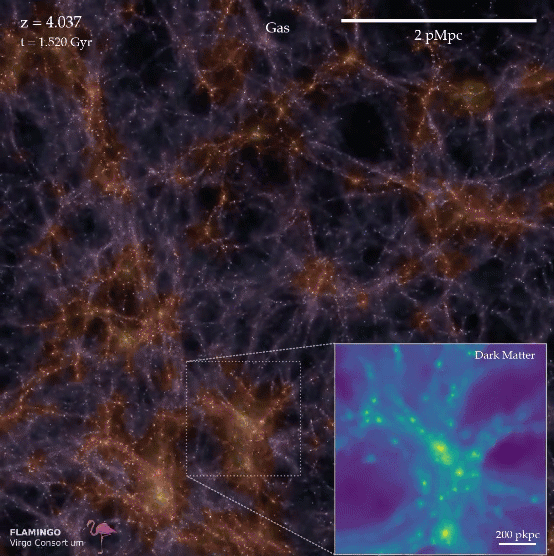
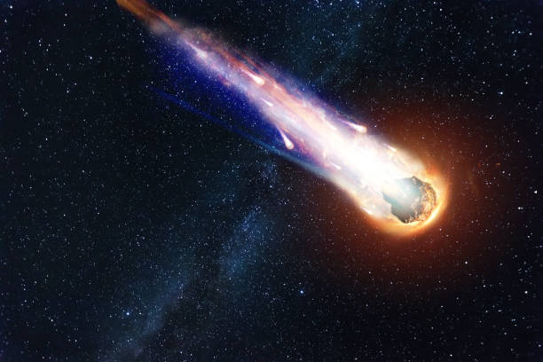
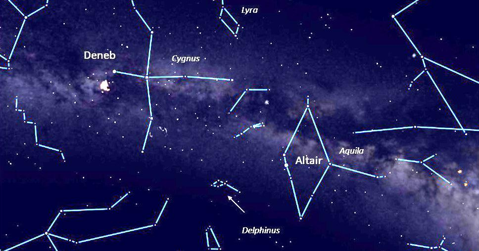
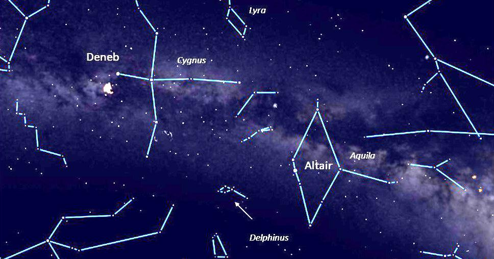
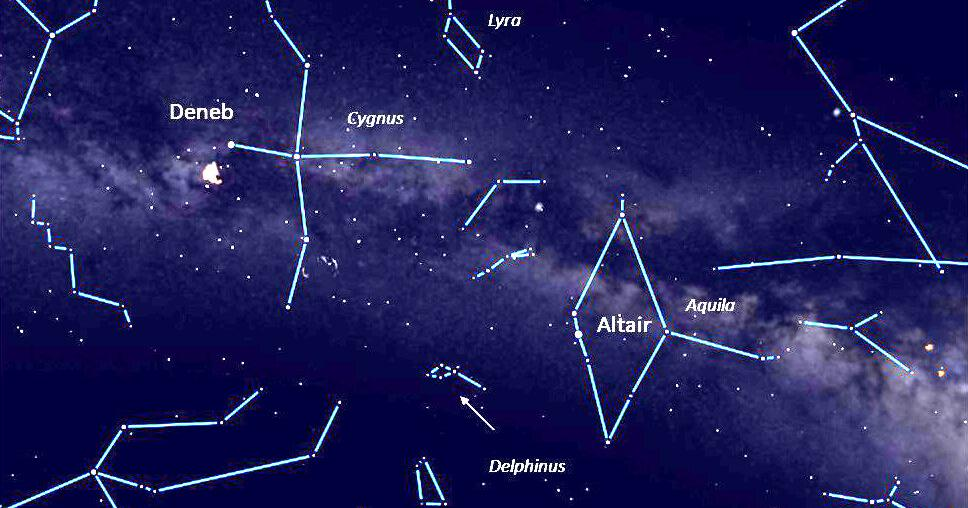

ASTRONOMY

Astronomical Events in 2023
Top Stories
The dynamical dance of physics can entrance — as the latest supercomputer models of the cosmos demonstrate. Dubbed FLAMINGO, the set of simulations captures the emergence of the structure of the universe. Starting from.The simulations were developed by the Virgo Consortium, an international collaboration that has been working on such simulations since it was founded in 1994.


 

